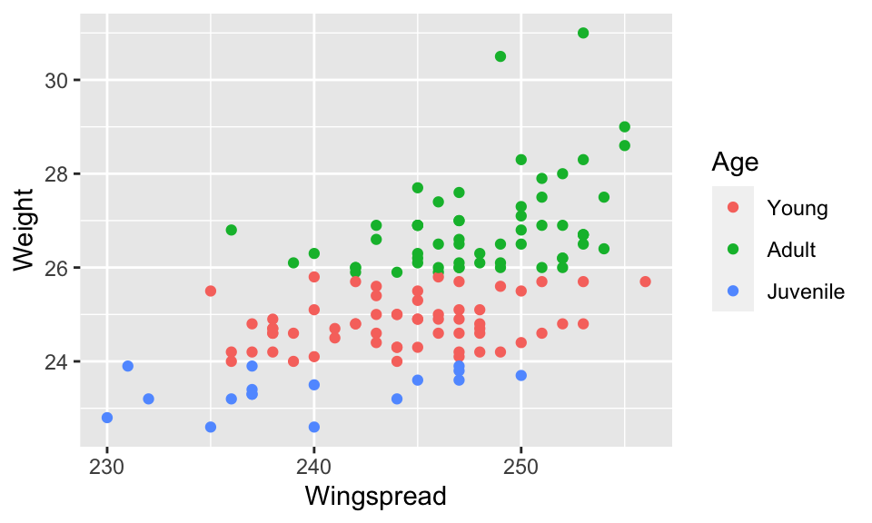
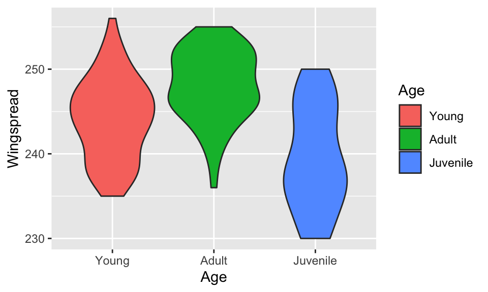
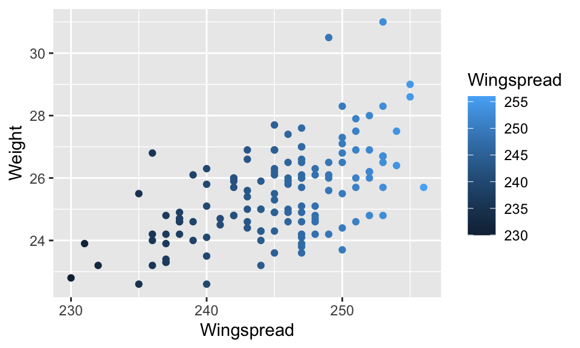

Background: Exploring the data with R
All exercises here will use a pre-loaded dataset called sparrows. This dataset was collected in 1898 by Hermon Bumpus, an American biologist working at Brown University . Immediately following a bad winter storm, he collected 136 English house sparrows (some alive, some dead), Passer domesticus, and brought them indoors. Of these birds, 64 had died during the storm, but 72 recovered and survived. Bumpus measured the birds’ physical traits (in mm or g) and recorded them for future generations of data science students.
Before you begin the exercises, examine the dataset here!! AS A GENERAL RULE, you should ALWAYS ALWAYS ALWAYS look at data before (and while!) plotting!!
sparrows, the name of the pre-defined data frame.
- On this website ONLY (but not within R console), this table will display interactively so you can scroll across columns. In “real R”, there is no “point-and-click”.
# Literally run this code. No mystery!
sparrowsEach row in the dataset records a single observation - in other words, each row corresponds to an individual sparrow. Each column contains a variable.
Use the functions nrow(), ncol(), and names() to quickly see, respectively, the number of rows in the data frame, the number of columns in the data frame, and the column (variable!) names of the data frame. Try it out below:
# Run each function with the argument sparrows, and examine the output to see the answers
nrow(sparrows)
ncol(sparrows)
names(sparrows)str(). Try it below:
# Provide the function str() with the argument sparrows
str(sparrows)You will see the dataset has three categorical variables that R refers to as “factors.” Each of these variables has two levels, which means “categories in the categorical variable.” In this dataset, for example, the variable Age has three levels: “Adult”, “Juvenile”, and “Young”. You will see the remaining 9 variables are all numeric continuous.
summary() to get something magical: A quick summary of each variable in the dataset! For factor variables, this command tells you the count of each level. For numeric variables, this command gives you the five-number summary and the mean.
# Provide the function summary() with the argument sparrows
summary(sparrows)Remember, you can examine individual columns with several helpful functions (summary() is easily the most comprehensive) using the dollar sign to reference them from the data frame. Run the code below to see this in action, and then adapt the code to look at the variable Sex instead of Wingspread.
summary(sparrows$Wingspread)summary(sparrows$Sex)The introverse is here to help
Don’t forget to use the introverse library to help you! The library has been loaded into these exercises. Here are all the help topics you might want for these exercises:
- Plot setup:
ggplot()for setting up the plot. To get help,get_help("ggplot")(with quotes!), and so on for the rest below…aes()for mapping variables to plot aesthetics
- Plot geometries:
- (Set 1,5)
geom_point()for making points. Here, we only usegeom_point()to make scatterplots, but this geom can be used to make points more generally also - (Set 2)
geom_histogram(), for making histograms - (Set 2)
geom_density(), for making density plots - (Set 2)
geom_boxplot(), for making boxplots - (Set 2)
geom_jitter(), for making strip/jitter plots - (Set 2)
geom_violin(), for making violin plots - (Set 3)
geom_bar(), for making bar plots that show counts of a categorical variable - (Set 5)
geom_smooth(), for adding trendlines, usually to a scatterplot
- (Set 1,5)
- Additional plot features:
- (All sets)
labs(), for adding/customizing labels to the plot - (Set 6) This post with functions for customizing mapped color/fill palettes.
- Use any of these for more help:
get_help("scale_color_manual"),get_help("scale_color_brewer"), orget_help("scale_color_viridis_d")
- Use any of these for more help:
- (All sets)
- Factors:
- (Set 4)
fct_relevel()for changing the order of a factor variable
- (Set 4)
You can use the get_help() function in any code chunk to get some help, which will open in another browser! Prefer point-and-click? Use this link (but beware, there is a lot going on there…).
Set 1: Scatterplots
NOTE: These exercise code chunks don’t let you “tab in” lines. That’s ok! RStudio will let you perfectly fine. Don’t worry about tabs here :)
Scatterplots show the relationship between two variables, and they use the geom_point() geometry as shown in this example where sparrow Weight is plotted across sparrow Wingspread (y goes across x).
ggplot(sparrows) + # Use the sparrows dataset
aes(x = Wingspread, y = Weight) + # Specify columns Wingspread and Weight to go on x and y axis.
geom_point() # Use pointsThe geom_point() geom can accept several visual features, which can either be plainly specified to geom_point() or specified as an aesthetic if they map to the data. The most important ones are:
color: Color of points- Certain types of points can also have a
fill, and these are introduced in Set 5 (Scatterplots Part 2) of these exercises.
- Certain types of points can also have a
size: Size of pointsshape: Shape of points- For more, run
get_help("geom_point")in a code chunk here to see theintroversedocs.
Femur_Length) across Wingspread.
- Hint: Remember: This terminology means y across x:
Femur_Lengthshould be mapped to the y-axis, andWingspreadshould be mapped to the x-axis.
ggplot(sparrows) +
aes(x = Wingspread, y = Femur_Length) +
geom_point() Femur_Length across Wingspread, but make all points the color red.
- Hint: This is simply coloring points, not mapping color to a variable. Just add the color argument to
geom_point(). Colors MUST go in QUOTES - “red” or ‘red’, NOT red.
ggplot(sparrows) +
aes(x = Wingspread, y = Femur_Length) +
geom_point(color = "red") Femur_Length across Wingspread, but this time color all points based on survival status.
- Hint: This IS mapping a variable (specifically,
Survival!) to a color, so you need to place your color argument inside aes().
ggplot(sparrows) +
aes(x = Wingspread, y = Femur_Length, color = Survival) +
geom_point() ALERT!
An extremely common bug/typo you can now look forward to doing for the rest of your life is accidentally placing a column outside of aes(). Here’s an example of that bug - run the code to see how it produces a error! There’s a bug here!
ggplot(sparrows) +
aes(x = Wingspread, y = Femur_Length) +
geom_point(color = Survival) ggplot(sparrows) +
aes(x = Wingspread, y = Femur_Length, color = Survival) +
geom_point() What’s going on above exactly? ggplot2 can only automatically know that you are referring to a column if it’s inside aes(). If it’s outside an aes(), R wants to find a variable with that name. But, Survival is not a variable on its own - it only exists as a column within sparrows. Try to modify and re-run the code so that color is properly mapped to the variable Survival. (Hint: color = Survival must be an argument to aes()!).
Weight variable. Unlike Survival, Weight is a numeric continuous variable, so you’ll get a gradient of colors rather than a single discrete color for each survival category.
ggplot(sparrows) +
aes(x = Wingspread, y = Femur_Length, color=Weight) +
geom_point() labs() function. The code below starts off the question for you by adding a custom label to the X axis. See it in action first before adding more labels!
- You’ll need to more about this function from the
introversewith this command:get_help("labs")(run it below, or see here). Then, apply what you’ve learned to add the following labels to your plot:- Y axis: “Femur Length (mm)”
- Title: “Scatterplot of sparrow wingspread and femur length”
- For some extra bells and whistles, try adding a caption or subtitle!!
ggplot(sparrows) +
aes(x = Wingspread, y = Femur_Length, color = Weight) +
geom_point() +
labs(x = "Wingspread (mm)")ggplot(sparrows) +
aes(x = Wingspread, y = Femur_Length, color = Weight) +
geom_point() +
labs(x = "Wingspread (mm)",
y = "Femur Length (mm)",
title = "Scatterplot of sparrow wingspread and femur length")PAUSE! for an important lesson
Look at the solution code provided for the previous exercise. Below, I write the exact same code again, but all on one line (the text is “wrapped” in the window you see, so it appears on multiple lines but technically it is not!). As you will notice, it is absolutely awful to try and read. Even though the code is technically correct, it is poorly organized, making it extremely challenging to get any coherent sense of what the code is doing.
ggplot(sparrows) + aes(x = Wingspread, y = Femur_Length, color=Weight) +geom_point() + labs(x = "Wingspread (mm)", y = "Femur Length (mm)", title = "Scatterplot of sparrow wingspread and femur length")When crafting plots with ggplot2, it is strongly recommended (yes, you will be graded on this) to space out your code like the solutions demonstrate. Every time you add the next function, start a new line. Remember to keep the plus sign + at the END of a line! If you don’t end a line with the +, R will think the command is over - it won’t know to check if there’s a plus sign coming up. You’ll also notice in the labs() function, I separate arguments one line at a time, again making sure the comma falls at the END of a line and never at the beginning.
In other words…
## YES
ggplot(sparrows) +
aes(x = Wingspread, y = Femur_Length) +
geom_point()
## ALSO YES
ggplot(sparrows) +
aes(x = Wingspread,
y = Femur_Length) +
geom_point()
## NO - disorganized and hard to read, especially when plots get more complex
ggplot(sparrows) + aes(x = Wingspread, y = Femur_Length) + geom_point()
## NO - this is a BUG in plotting code because you cannot start a line with +
ggplot(sparrows) +
aes(x = Wingspread, y = Femur_Length)
+ geom_point()
Set 2: Visualizing distributions
There are many different plotting strategies for visualizing distributions, specifically, values of a numeric variable. Some more popular options and their geoms (which link to the documentation!) include…
| Plot | Geom (yes, these are links!) | Notes |
|---|---|---|
| Histogram | geom_histogram() |
Only ONE axis is specified in aes() (usually the x-axis). ggplot2 takes care of the other axis for you - it counts and bins on your behalf! (A close relative is frequency polygons) |
| Density plot | geom_density() |
Think of this as a smoothened histogram. Same as for histogram, you only specify the X axis. |
| Boxplot | geom_boxplot() |
Best used when making multiple boxplots in a single panel |
| Strip Plot | geom_jitter() |
Or, geom_point(position = position_jitter())! |
| Violin Plot | geom_violin() |
The hybrid child of a density plot and a boxplot, kind of! |
To learn how to make each type of plot, we will visualize the distribution of Wingspread.
geom_histogram().
- Remember: You only should specify the x-axis;
ggplot2will do the y-axis for you since the y-axis is a statistical transformation (count). - For an added insight, try specifying
Wingspreadas theyinstead of as thexaesthetic.ggplot2will then make a horizontal histogram!
ggplot(sparrows) +
aes(x = Wingspread) +
geom_histogram()
# This makes a horizontal histogram:
ggplot(sparrows) +
aes(y = Wingspread) +
geom_histogram()You will notice that ggplot2 returns a message (not an error!) when you make histograms:
stat_bin() using bins = 30. Pick better value with binwidth.
This is an EXPECTED AND NORMAL message. ggplot2 is telling you: I assumed a default of 30 bins along your X-axis in your histogram, but you should change this to something else if you want!
The message suggests ONE way you can customize the binning: Using the argument binwidth with geom_histogram() to specify how wide along the X-axis a bin should be. Alternatively, you can use the argument bins with geom_histogram() to specify how many bins there should be (its default is 30! Get it?).
binwidth: 0.1, 1, 5, 10, and 20.
- Hint: To complete this question, make the same histogram as before except with the argument
binwidth = 0.1provided togeom_histogram(). Make all the bin widths one at a time! - Think about which version(s) represent(s) the data well, and which version(s) is/are just terrible ideas.
- For an added challenge, also experiment with the
binsargument instead ofbinwidth.
# binwidth of 0.1
ggplot(sparrows) +
aes(x = Wingspread) +
geom_histogram(binwidth = 0.1)
# binwidth of 1
ggplot(sparrows) +
aes(x = Wingspread) +
geom_histogram(binwidth = 1)
# binwidth of 5
ggplot(sparrows) +
aes(x = Wingspread) +
geom_histogram(binwidth = 5)
# binwidth of 10
ggplot(sparrows) +
aes(x = Wingspread) +
geom_histogram(binwidth = 10)
# binwidth of 20
ggplot(sparrows) +
aes(x = Wingspread) +
geom_histogram(binwidth = 20)
This is really where using variables start to become important: Let’s say you have some R code which creates 50 histograms, and you want 15 bins for all histograms (i.e., geom_histogram(bins = 15)). One option is to make all plots and write 15 for the argument. This works well..until you change your mind later and decide that maybe 12 would have been better. Rather than having to find and replace all 15’s, we could just have a variable used in the code, and simply change the variable and have it automatically apply.
my_bins <- 5 (without touching the actual ggplot2 code!), and re-run the chunk to see how there are now 5 bins.
my_bins <- 15
ggplot(sparrows) +
aes(x = Wingspread) +
geom_histogram(bins = my_bins)my_bins <- 5
ggplot(sparrows) +
aes(x = Wingspread) +
geom_histogram(bins = my_bins)- Remember: For a 2D shape like a bar in a histogram, the color is outline and fill is fill.
- Don’t forget all the R colors you can use!!!
- After you make your colored and filled histogram, also add “just a size” (use a value below 3, trust me…) to your histogram with the argument
sizeto see what this argument does in histograms. - For an added challenge…
- Make all your visual features (fill, color, and size) variables to use in your plot rather than the direct values, similar to how you practiced with
my_binsin the previous question. - Make sure to choose meaningful variable names. In other words,
my_binsis a lot more meaningful thanx! Adopting this “coding best practice” makes your code easier for YOU to read, write, and work with.
- Make all your visual features (fill, color, and size) variables to use in your plot rather than the direct values, similar to how you practiced with
ggplot(sparrows) +
aes(x = Wingspread) +
geom_histogram(color = "chocolate3", fill = "skyblue")
# Added challenge, with size:
ggplot(sparrows) +
aes(x = Wingspread) +
geom_histogram(color = "chocolate3",
fill = "skyblue",
size = 2)
# Adding
hist_color <- "chocolate3"
hist_fill <- "skyblue"
hist_line_size <- 2
ggplot(sparrows) +
aes(x = Wingspread) +
geom_histogram(color = hist_color,
fill = hist_fill,
size = hist_line_size)
Wingspread using geom_density().
- Since the y-axis of density plots are a transformed value, leave the
yaesthetic blank just like for histograms. - Start off strong by adding “just a FILL” of your choosing to your density plot!!
ggplot(sparrows) +
aes(x = Wingspread) +
geom_density(fill = "palegreen4")alpha argument given directly to the relevant geom. Values of alpha range from 0-1, where 0 is fully transparent and 1 is fully opaque. Add an alpha argument (along with a fill argument!) to geom_density() to practice this argument. You might have to do some trial/error to find a good alpha value. Welcome to programming!
- Again, for an added challenge, make a variable to use for your
alphavalue.
ggplot(sparrows) +
aes(x = Wingspread) +
geom_density(fill = "palegreen4", alpha = 0.6) # Using 0.6 for example. Other alphas are not necessarily "wrong"!
# With a variable:
density_alpha <- 0.6
ggplot(sparrows) +
aes(x = Wingspread) +
geom_density(fill = "palegreen4", alpha = density_alpha)Sex) in one plot. Accomplish this with the same code as before, except add an aesthetic mapping to fill from Sex.
- Compare this plot and the previous plot carefully in terms of their grammar to see why only adding the fill aesthetic accomplished the goal. The x-axis is still
Wingspread, and the y-axis is still automatically calculated. Therefore, the only distinction between plots is the fill. - Using
alphais a really, really good idea here. If you don’t usealpha, you can’t fully see the distributions. It’s such a good idea, that it’s required. Use trial and error to find a good value between 0-1. - You have now made an “overlapping density plot”!
ggplot(sparrows) +
aes(x = Wingspread, fill = Sex) +
geom_density(alpha = 0.6)geom_boxplot(), in other words, Wingspread across Sex. Axes are not transformed values in boxplots, so you’ll need to specify both an x and y variable.
- Up your game right away! Can you add “just a fill” and/or “just a color”? Your plot, your choice!
# Boxplot with "just" a fill
ggplot(sparrows) +
aes(x = Sex, y = Wingspread) +
geom_boxplot(fill = "slateblue3")ggplot2) with the following tasks:
- Instead of “just” a fill, modify the previous boxplot to fill distributions based on
Sex.- Hint: You’ll need to add another aesthetic mapping for
Sexon top of what you already have.
- Hint: You’ll need to add another aesthetic mapping for
- Instead of filling by
Sex, fill bySurvival, but still keepSexalong the x-axis.- After you complete this plot, really look at it carefully to understand how each aesthetic data mapping contributed to the plot. This is how you can make a grouped boxplot, and it all starts with applying the grammar of graphics.
# Boxplot filled by Sex - don't forget to remove any straggling "just" fills (see next plot)
ggplot(sparrows) +
aes(x = Sex, y = Wingspread, fill = Sex) +
geom_boxplot()
# The "just blue" fill will OVERRIDE aes(fill = Sex) - be careful!!!
ggplot(sparrows) +
aes(x = Sex, y = Wingspread, fill = Sex) +
geom_boxplot(fill = "blue")
# Boxplot filled by Survival - make sure you see how the aes mappings lead to the created plot!
# Confused? Great! That's why you're in a class and not doing this alone! Ask me questions!!!
ggplot(sparrows) +
aes(x = Sex, y = Wingspread, fill = Survival) +
geom_boxplot()geom_violin(). Your code here will be virtually identical, except for the geom specification. Bravely forge ahead!
# Violin with "just" a fill
ggplot(sparrows) +
aes(x = Sex, y = Wingspread) +
geom_violin(fill = "slateblue3")
# Violin filled by Sex
ggplot(sparrows) +
aes(x = Sex, y = Wingspread, fill = Sex) +
geom_violin()
# Violin filled by Survival
ggplot(sparrows) +
aes(x = Sex, y = Wingspread, fill = Survival) +
geom_violin()geom_jitter() to make a strip plot of Wingspread across Sex.
- You may need to customize the spacing of the points in the strip plot so that it is totally unambiguous which point belongs to which x-axis category. You can do this with the argument
widthtogeom_jitter(). I have personally found that 0.1-0.3 is usually a nice range for this argument. - You may want to change the size of points to make everything cleanly visible. Perhaps the plot would also benefit from some transparency (
alpha) to the points? - The “jittering” to the points is random, so every time you re-make the plot, the specific x-location of the points will change.
- Fun fact:
geom_jitter()is actually just a special version ofgeom_point(), so all point aesthetics apply here. In fact,geom_jitter()is just a shortcut for the more annoying-to-writegeom_point(position = position_jitter()).
# Strip plot
ggplot(sparrows) +
aes(x = Sex, y = Wingspread) +
geom_jitter()
# narrower width - compare this to the default above to understand how it works!
ggplot(sparrows) +
aes(x = Sex, y = Wingspread) +
geom_jitter(width = 0.1)
# want to change the size? practice learning how these arguments modify the plot!
# "trial and error" with arguments like width, size, and alpha is how we make plots appealing and clear!
ggplot(sparrows) +
aes(x = Sex, y = Wingspread) +
geom_jitter(width = 0.1, size = 3, alpha = 0.5)Survival (inside aes()!). You’ll find a result similar to the boxplot version of this plot.
- Think: Why did I say color and not fill, as I did for boxplots and violin plots? You just thought: Ah, it’s because here, we have 1-dimensional points, which can only have a color, not fill.
- Make sure to check the jitter width. Think: Does it need to be tweaked for clear interpretation? You just thought: Definitely, I really need to tweak the width to find the “right” amount.
ggplot(sparrows) +
aes(x = Sex, y = Wingspread, color = Survival) +
geom_jitter(width = 0.1)
# Bonus information: this is actually just a shortcut for...
ggplot(sparrows) +
aes(x = Sex, y = Wingspread, color = Survival) +
geom_point(position = position_jitter(width = 0.1))Set 3: Visualizing Amounts/Counts
The most common approach visualizing amounts, or count, data is with barplots, which we will focus on in this set. We use barplots to show the counts in different categories of a categorical variable and/or a discrete numeric variable: the x-axis will display the categories, and the y-axis will have a bar whose height equals the count.
ggplot2 is a real pal and does all the binning/counting for you when you call geom_histogram(), ggplot2 will do all the barplot counting for you as well with the function geom_bar(). Use geom_bar() to make a barplot of the Survival counts.
- Hint: Survival belongs on the x-axis, and ggplot takes care of the y-axis for you. You only need an x-axis mapping and the
geom_bar()geom!
ggplot(sparrows) +
aes(x = Survival) +
geom_bar()- These are NOT mapped aesthetics. Simply provide color and fill arguments to
geom_bar()using your favorite colors. - You may also want to experiment with the
widthargument togeom_bar()to find a bar width that suits you (choose a number between 0-1), or asizeargument to customize the size of bar outlines.
ggplot(sparrows) +
aes(x = Survival) +
geom_bar(color = "forestgreen",
fill = "beige")
# Experiment with size and width! Spielman did some trial and error and personally liked this -
ggplot(sparrows) +
aes(x = Survival) +
geom_bar(color = "forestgreen",
fill = "beige",
width = 0.2,
size = 0.75)Survival, but make the following changes:
- Remove the “just a fill” argument, and…
- Replace it with fill that is an aesthetic mapping to
Age. - You can keep or remove your color per your choice. In the end, you will have made a grouped barplot jointly visualizing counts of Age and Survival.
ggplot(sparrows) +
aes(x = Survival, fill = Age) +
geom_bar()Age and Survival to have Age on the x-axis and Survival as the color. This plot displays the same data but with a different emphasis.
ggplot(sparrows) +
aes(x = Age, fill = Survival) +
geom_bar()ggplot2 makes “stacked” barplots when there are multiple groups. We can also show them “side-by-side”, which is called “dodged”, by straight-up adding this argument to geom_bar(): position = position_dodge().
- Hint: Literally all you need to do is, instead of writing
geom_bar(), write it wit this extra argument:geom_bar(position = position_dodge()) - Hint 2: Feeling fancy? Why not add just a color? Just a fill? A mapped color? A mapped fill? Have some fun with it :)
- Hint 3: This is on HW4!
ggplot(sparrows) +
aes(x = Age, fill = Survival) +
geom_bar(position = position_dodge())x mapping to y instead, and don’t provide an x aesthetic. As always, drawing it out will help!
# Stacked and horizontal:
ggplot(sparrows) +
aes(y = Age, fill = Survival) +
geom_bar()
# Dodged and horizontal:
ggplot(sparrows) +
aes(y = Age, fill = Survival) +
geom_bar(position = position_dodge())Set 4: Changing the order of factors
These exercises will teach you a new skill that you will need for HW4 and more!
The code below makes a scatterplot of femur length across wingspread with points colored by Age. Have a look at the code, run it, and make sure you are comfortable with the plot/code overall before proceeding. Otherwise, great time to pause and check in with Slack or Dr. Spielman!
ggplot(sparrows) +
aes(x = Wingspread,
y = Femur_Length,
color = Age) +
geom_point()You’ll notice in the legend that the colors are ordered “Young”, “Adult”, “Juvenile”, “Young” - this is because the factor variable is in that order. We can see the ordered categories, aka levels, of a factor variable with levels(). Run the code below to see the order of levels:
levels(sparrows$Age)What if we wanted the order to be different and show the Age variable in this (more reasonable) order: “Juvenile”, “Young”, and finally “Adult” last? There are several strategies to accomplish this task, and we will learn how to do this using a function from the package forcats, a tidyverse package that helps change the order of a factor variable. The package name involves several puns, and the library has been pre-loaded for you in these exercises.
We will use the function fct_relevel() from the forcats package, which you can always learn more about with get_help("fct_relevel") (scroll to BOTTOM of this page to see an example with a plot!). Begin to see how this function works below - this demo code changes the Age levels to be in order “Juvenile”, “Young”, “Adult”. We provide arguments in this order: First, the variable to work with (the Age column), and then just a bunch of strings representing the new order we want. Make sure to spell these categories precisely as they appear in the dataset!!
- This code does not redefine the
Agecolumn since we aren’t assigning anything with<-. It is simply showing us the output from performing such an operation. The data remains fully unchanged, the order of levels has changed to the order we provided - see the bottom of the output!
# See how a new order for Levels: is printed at the end??
fct_relevel(sparrows$Age, "Juvenile", "Young", "Adult")
We can actually use this function directly inside of building a ggplot!! Remember, when we make ggplots, we do not need to use dollar sign sparrows$Age notation - we can simply refer to Age since we have already specified using the sparrows dataset. Instead of just mapping color to Age, we map color to a releveled-on-the-fly Age!
ggplot(sparrows) +
aes(x = Wingspread,
y = Femur_Length,
color = fct_relevel(Age, "Juvenile", "Young", "Adult")
) + # placing the closing aes() parentheses on this next line to make the above code easier to see.
geom_point()We formally changed the order in our plot, hurray! However, the legend title now looks like hot garbage. We can fix that with a label - we need to relabel the color aesthetic:
ggplot(sparrows) +
aes(x = Wingspread,
y = Femur_Length,
color = fct_relevel(Age, "Juvenile", "Young", "Adult")
) +
geom_point() +
labs(color = "Sparrow age") # relabel the COLOR legendAge as: “Adult”, “Young”, “Juvenile” instead.
ggplot(sparrows) +
aes(x = Wingspread,
y = Femur_Length,
color = fct_relevel(Age, "Adult", "Young", "Juvenile")
) +
geom_point() +
labs(color = "Sparrow age") # relabel the COLOR legendSex but in order “Female” then “Male” instead of the default (see the default for yourself by running levels(sparrows$Sex)!!). Make sure you also include a clean legend title!
- Start slow and build up! I recommend…
- First, can you make this scatterplot without worrying about the order?
- Then, can you modify the
aes()argument tocolorto change that default order ofSex? - Finally, can you add in the cleaner legend title?
ggplot(sparrows) +
aes(x = Wingspread,
y = Femur_Length,
color= fct_relevel(Sex, "Female", "Male")) +
geom_point() +
labs(color = "Sparrow sex")fill is mapped to Sex, which again should be in order “Female” and then “Male.” To ensure a nice legend title, you’ll need to use the fill argument to labs, not color (since we are mapping a fill!)
- Again, start slow and build it up! Run the code in between each step to BUILD IT UP SLOWLY!
- First, can you make a density plot of femur lengths?
- Second, can you map the fill to
Sex? - Third, can you change the Male/Female order?
- Finally, can you add a nicer legend title?
ggplot(sparrows) +
aes(x = Femur_Length,
fill = fct_relevel(Sex, "Female", "Male")) +
geom_density(alpha = 0.5) +
labs(fill = "Sparrow sex")Sex in the order “Male” then “Female”. This one is a little trickier, since we BOTH need to specify Sex on the x-axis and as the fill aesthetics. This means we need to use fct_relevel() twice. Run and understand this code for some learning to apply to the next question!
- Start slow and build up, always and forever!
- Don’t forget that you know how to make a boxplot! We need
Femur_Lengthon the y-axis andSexon the x-axis, andSexmapped to fill.
ggplot(sparrows) +
aes(x = Sex,
y = Femur_Length,
fill = fct_relevel(Sex, "Female", "Male"))+
geom_boxplot() +
labs(fill = "Sparrow sex")fill order, there is now a different order on the x-axis and in the legend! We want to keep this more consistent, so we need to also provide the whole fct_relevel() stuff as the x-axis aesthetic argument, just like we do for fill.
- When you relevel an axis, the axis label ends up like garbage too! Make sure to clean up the x-axis label by adding an
xargument tolabs()!
ggplot(sparrows) +
aes(x = fct_relevel(Sex, "Female", "Male"),
y = Femur_Length,
fill = fct_relevel(Sex, "Female", "Male"))+
geom_boxplot() +
labs(fill = "Sparrow sex",
x = "Sparrow sex")Set 5: Scatterplots, Part 2
Recall that we make scatterplots with geom_point(), and scatterplots are used to show the relationship between two x/y numeric values. In this second scatterplot lesson, we’ll learn some additional customization strategies for making scatterplots your own.
Let’s play with point size and shape. Here are all the different shapes you can use for points when plotting in R, and we literally refer to them as their given number.

17 (see the shape links above!). First run and understand the template code. Then, modify the code to make the points size 3 and using shape 18 (diamond).
- Hint: We are literally providing a single size and shape, NOT mapping size and shape to the data! Therefore, they are regular arguments to
geom_point(), NOT toaes().
ggplot(sparrows) +
aes(x = Wingspread, y = Femur_Length) +
geom_point(size = 2, shape = 17)ggplot(sparrows) +
aes(x = Wingspread, y = Femur_Length) +
geom_point(size = 3, shape = 18)geom_point() to see this in action. Customize the size based on your personal preference!!
- Don’t forget the magical PDF of all the R colors ! Have some fun :)
ggplot(sparrows) +
aes(x = Wingspread, y = Femur_Length) +
geom_point(shape = 21, color = "navy", fill ="cadetblue")ggplot2 is designed to keep adding plot components on top of one another, we can even add plot components on top of a plot. See it in action below!
- Hint: The assignment operator can be used in either direction, as long as it points to the variable name.
x <- 7and7 -> xare both good!!x -> 7is not :(. Learn more withget_help("assignment").
ggplot(sparrows) +
aes(x = Wingspread, y = Femur_Length) +
geom_point() -> sparrow_wing_femur_plot # Use the assignment operator in the forward direction for better flow of code!
# Examine the plot first
sparrow_wing_femur_plot
# Next, UNCOMMENT the next line code and run it to see some awesome. IMPORTANT: this does NOT change the definition of `sparrow_wing_femur_plot`
# sparrow_wing_femur_plot + labs(x = "OMG WE ADDED AN X-AXIS LABEL!")
# Once you see how that works, add both x and y axis labels to the plot below in the space below to get a final plot
ggplot(sparrows) +
aes(x = Wingspread, y = Femur_Length) +
geom_point() -> sparrow_wing_femur_plot
sparrow_wing_femur_plot +
labs(x = "Wingspread (mm)",
y = "Femur length (mm)")aes(). In fact, you can include aes() in the initial call to ggplot() or to any geom_ function to specify aesthetics for that geom (as we’ll learn soon, you can have multiple geoms in a plot!). The code below demonstrates this concept; Run the code below to understand that you can place aes() in many locations.
# Place aes in ggplot(). This is EQUIVALENT to aes() on its own line
ggplot(sparrows, aes(x = Wingspread, y = Femur_Length)) +
geom_point()
# Place aes in geom_point(). We'll see soon - this does slightly different things!
ggplot(sparrows) +
geom_point(aes(x = Wingspread, y = Femur_Length))geom_smooth() can be used to add a trendline to the plot, using one of several modeling options. To get a line of best fit (aka regression line), use the code geom_smooth(method = "lm"). Re-create your scatterplot (no colors or aesthetics besides x and y) but add (literally, add with +!) this geom to your plot to show the trendline for your data.
- By default,
geom_smooth()will include a 95% confidence interval, (statistical bands for the regression line). - If you see a squiggly line, you have a bug! This is actually a different type of trendline called a “loess,” but we don’t want to plot that. We want a line. You must use the argument
method = "lm"withgeom_smooth()to get a linear trendline, like this:geom_smooth(method = "lm"). - You will see that
ggplot2returns the message: “geom_smooth()using formula ‘y ~ x’”. This is NORMAL and EXPECTED: It is telling you the formula used to calculate the trendline. You can safely ignore it.
# With confidence bands
ggplot(sparrows, aes(x = Wingspread, y = Femur_Length)) +
geom_point() +
geom_smooth(method = "lm")geom_smooth() function further by modifying the plot you made for the previous question in the following ways:
- Include the argument
se=FALSEtogeom_smooth()to disable the confidence interval bands (sestands for “standard error,” which is mathematically very closely related to the confidence interval). - Explore what adding
colorandfillarguments togeom_smooth(). Use these arguments in the same way you’d provide “just a color/fill” togeom_point()(these are not mapped aesthetics). - One thing you will discover:
filldoesn’t really do much ifse=FALSE. Understand why this is by trying lots of code!
# Without confidence bands
ggplot(sparrows, aes(x = Wingspread, y = Femur_Length)) +
geom_point() +
geom_smooth(method = "lm", se = FALSE)
# With confidence bands and color
ggplot(sparrows, aes(x = Wingspread, y = Femur_Length)) +
geom_point() +
geom_smooth(method = "lm", color = "orange")
# With confidence bands and color and fill!
ggplot(sparrows, aes(x = Wingspread, y = Femur_Length)) +
geom_point() +
geom_smooth(method = "lm", color = "orange", fill = "navy")
# Without confidence bands and color, and a useless fill argument
# If there's no confidence band, it doesn't matter if you specify a fill is - there's nothing to fill!
ggplot(sparrows, aes(x = Wingspread, y = Femur_Length)) +
geom_point() +
geom_smooth(method = "lm", se=FALSE, color = "orange", fill = "navy")
aes() placement work when your plot has multiple geoms? This time, we’d like to specify a color aesthetic for Survival. Re-build your plot with geom_point() and geom_smooth() with this aesthetic using three different placements for the COLOR aes. For all plots, place the x and y aesthetics in the initial ggplot() call.
- Place the color aesthetic inside the
ggplot()function, along withxandy - Place the color aesthetic inside the
geom_point()function only - Place the color aesthetic inside the
geom_smooth()function only - Hint: Don’t forget to actually put
color = Survivalinside of theaes()function, no matter whereaes()is.
Insights you gain from this question are CRITICAL to your understanding of
ggplot2. Don’t take this question lightly! Spend some time, take some of your own notes, and ask me questions!
# color aes in initial ggplot call
# BOTH geom_point and geom_smooth know about ("inherit") the color mapping
ggplot(sparrows, aes(x = Wingspread, y = Femur_Length, color = Survival)) +
geom_point() +
geom_smooth(method = "lm")
# color aes in geom_point() call
# ONLY geom_point inherits the color mapping. geom_smooth has no idea, so acts on data as a whole
ggplot(sparrows, aes(x = Wingspread, y = Femur_Length)) +
geom_point(aes(color = Survival)) +
geom_smooth(method = "lm")
# color aes in geom_smooth() call
# ONLY geom_smooth inherits the color mapping. geom_point has no idea, so all points are the same color (default black)
ggplot(sparrows, aes(x = Wingspread, y = Femur_Length)) +
geom_point() +
geom_smooth(method = "lm", aes(color = Survival))- Clean and professional labels using
labs() - Color all points based on
Survival- With an included linear trendline for EACH
Survivallevel (make sure your aesthetic placement is appropriate!)
- With an included linear trendline for EACH
- Size all points based on
Weight(Hint: usesizeas an aesthetic to map the given variable) - Make all the points into shape 15
Once the plot is made, think about these design choices. Just because one can add these visual features, does it mean one should add these visual features? (Answer: No.) Note: Some of the legend colors will come out funky - later, we will learn how to deal with this type of situation.
ggplot(sparrows, aes(x = Wingspread, y = Femur_Length, color = Survival, size = Weight)) +
geom_point(shape = 15) +
geom_smooth(method = "lm") +
labs(x = "Wingspread (mm)",
y = "Femur Length (mm)",
title = "Scatterplot of sparrow femur length across wingspread ",
subtitle = "Oh wow is this an ugly plot!")Set 6: Customizing mapped color and fill palettes
For this set, you will be practicing applying non-default color and fill palettes to your mapped colors and fills. For all questions, you are simply modifying one of these three plots, and you can copy/paste the “baseline” plot code into all questions in this set!
Plot 1: A scatterplot with a discrete/categorical color mapping
ggplot(sparrows) + aes(x = Wingspread, y = Weight, color = Age) + # Age is a categorical variable geom_point()
Plot 2: A violin plot with a discrete/categorical fill mapping
ggplot(sparrows) + aes(x = Age, y = Wingspread, fill = Age) + # Age is a categorical variable geom_violin()
Plot 3: A scatterplot with a continuous color mapping
ggplot(sparrows) + aes(x = Wingspread, y = Weight, color = Wingspread) + # Wingspread is a continuous variable geom_point()
Set 6.1: Specifying custom colors and fills
Remember to use the PDF with all the colors!! So many colors!! Need help? Use
get_help("scale_color_manual").
scale_color_manual() to set THREE custom colors of your choosing to recreate Plot 1. The code below shows how to use this function: We use the argument values to provide an array of your three chosen (string!) colors. (Remember, Plot 1 code is up there!) Explore this code, and modify it to provide three DIFFERENT colors of your choosing!
ggplot(sparrows) +
aes(x = Wingspread,
y = Weight,
color = Age) +
geom_point() +
scale_color_manual(values = c("orchid4", "aquamarine3", "brown3"))ggplot(sparrows) +
aes(x = Wingspread,
y = Weight,
color = Age) +
geom_point() +
# different colors are in the values argument:
scale_color_manual(values = c("hotpink", "chartreuse", "beige"))Age, which we can check with levels():
levels(sparrows$Age)scale_color_manual() to set colors as…
- “Adult” should be “purple”
- “Juvenile” should be “red”
- “Young” should be “blue”
ggplot(sparrows) +
aes(x = Wingspread,
y = Weight,
color = Age) +
geom_point() +
scale_color_manual(values = c("blue", "purple", "red"))scale_fill_manual(). Choose your favorite three colors to use for the FILLS!!
ggplot(sparrows) +
aes(x = Age,
y = Wingspread,
fill = Age) +
geom_violin() +
scale_fill_manual(values = c("orchid4", "aquamarine3", "brown3"))Set 6.2: Specifying brewer colors and fills
Rather than specifying custom colors or fills, we can use one of several pre-existing palettes. ggplot2 comes with two popular palette frameworks: brewer scales and viridis scales. See what they look like here. For this section, you’ll practice making some plots with the brewer scales.
Big note: Nobody expects you to memorize how to use all these scale color/fill functions!! Instead, you have the resources for figuring out which function you need for the plot you want to make and then how to use that function. It’s all about engaging with resources for help - this is true for programmers at ANY level!
brewer palette to color points by Age. You should use the function scale_color_brewer() for this, and provide the argument palette = "Dark2".
ggplot(sparrows) +
aes(x = Wingspread,
y = Weight,
color = Age) +
geom_point() +
scale_color_brewer(palette = "Dark2")brewer palette to color points by Age, but this time choose your own favorite brewer palette instead of “Dark2”!
ggplot(sparrows) +
aes(x = Wingspread,
y = Weight,
color = Age) +
geom_point() +
scale_color_brewer(palette = "Pastel1")Set1 and Reds to get some practice. Since this plot uses a fill aesthetic, you will need to use the function scale_fill_brewer().
# Make with Set1 palette
ggplot(sparrows) +
aes(x = Age,
y = Wingspread,
fill = Age) +
geom_violin() +
scale_fill_brewer(palette = "Set1")
# Make with Reds palette
ggplot(sparrows) +
aes(x = Age,
y = Wingspread,
fill = Age) +
geom_violin() +
scale_fill_brewer(palette = "Reds")scale_color_distiller(), and we still supply it with the palette argument but we can only use one of the gradient color palettes (anything NOT Set3 - Accent). Remake Plot 3 using the red/purple called called "RdPu".
ggplot(sparrows) +
aes(x = Wingspread,
y = Weight,
color = Wingspread) +
geom_point() +
scale_color_distiller(palette = "RdPu")direction = 1 to the scale function. Remake the same Plot3 with "RdPu", but also include this argument to see the palette flipped.
ggplot(sparrows) +
aes(x = Wingspread,
y = Weight,
color = Wingspread) +
geom_point() +
scale_color_distiller(palette = "RdPu", direction = 1)Set 6.3: Specifying viridis colors and fills
For this section, you’ll practice making some plots with the viridis scales.
Again, Nobody expects you to memorize how to use all these scale color/fill functions!! Instead, we use the resources when we need them!
viridis palette to color points by Age. You should use the function scale_color_viridis_d() for this, since Age is discrete. Since we’re using the default scale, no further arguments are needed.
ggplot(sparrows) +
aes(x = Wingspread,
y = Weight,
color = Age) +
geom_point() +
scale_color_viridis_d()viridis palette “magma”. Again, we are mapping to Age so we should use scale_color_viridis_d(), but with the argument option = "magma" (not palette, but option!)
ggplot(sparrows) +
aes(x = Wingspread,
y = Weight,
color = Age) +
geom_point() +
scale_color_viridis_d(option = "magma")plasma and mako to get some practice. Since this plot uses a fill aesthetic, you will need to use the function scale_fill_viridis_d() (still _d since still Age, still discrete!).
# Make with plasma palette
ggplot(sparrows) +
aes(x = Age,
y = Wingspread,
fill = Age) +
geom_violin() +
scale_fill_viridis_d(option = "plasma")
# Make with mako palette
ggplot(sparrows) +
aes(x = Age,
y = Wingspread,
fill = Age) +
geom_violin() +
scale_fill_viridis_d(option = "mako")scale_color_viridis_c() where _c is for continuous. For this question, simply add on this function without any arguments to use the default viridis palette.
ggplot(sparrows) +
aes(x = Wingspread,
y = Weight,
color = Wingspread) +
geom_point() +
scale_color_viridis_c()option argument.
ggplot(sparrows) +
aes(x = Wingspread,
y = Weight,
color = Wingspread) +
geom_point() +
scale_color_viridis_c(option = "inferno")direction = -1 (different from brewer! Booo!! Hence, always use resources cause this is tricky to memorize! Don’t try to memorize!). Remake the same previous plot with “inferno” but also include this argument to see the palette flipped. .
ggplot(sparrows) +
aes(x = Wingspread,
y = Weight,
color = Wingspread) +
geom_point() +
scale_color_viridis_c(option = "inferno", direction = -1)